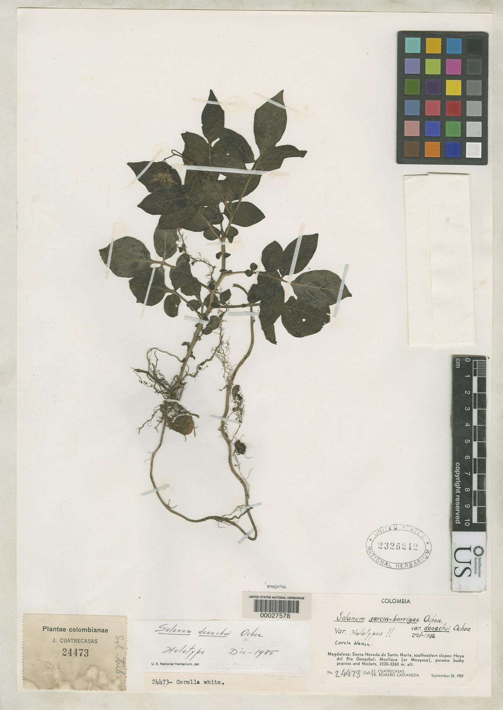
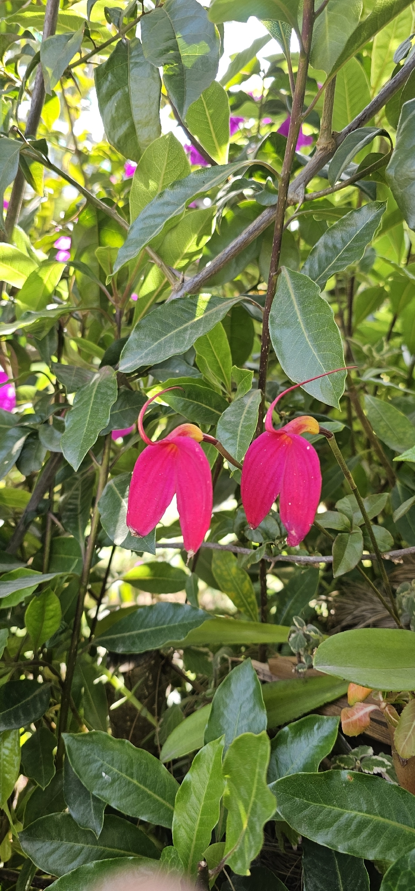

Un método para que cualquier pueblo audite, por sí mismo, qué de su territorio ya circula en las bases genéticas del mundo. A method for any Indigenous people to audit, on their own, what from their territory already circulates in the world's genetic databases.
Ereván · COP 17 del Convenio sobre la Diversidad Biológica · octubre de 2026
Medición del 20 de octubre de 2026 · 804 consultas archivadas · cada cifra reproducible
Ese catálogo lo construyó el SMT-ONIC sobre el inventario de plantas útiles de Colombia, con aval del Royal Botanic Gardens de Kew y del Instituto Humboldt. La pregunta que nadie había hecho es la siguiente.
The SMT-ONIC built this catalogue on Colombia's useful plants inventory, endorsed by the Royal Botanic Gardens, Kew and the Humboldt Institute. The question no one had asked is the following.
Fuente: ONIC, 2026.
La respuesta se puede consultar. Es pública, es gratuita y no hay que pedirle permiso a nadie. Lo que sigue se midió sobre las 99 especies endémicas que crecen dentro de resguardos, con doble verificación: el endemismo contra dos autoridades botánicas, y el conteo de secuencias contra dos bases independientes.
The answer can be looked up. It is public, free, and requires no one's permission. What follows was measured on the 99 endemic species growing inside Indigenous lands, with double verification: endemism against two botanical authorities, sequence counts against two independent databases.
137 secuencias de esta planta están publicadas. Ninguna lleva escrito el nombre con el que Colombia la registra: 133 dicen «Tococa guianensis», un nombre que la taxonomía ya retiró. La base resuelve el sinónimo si uno sabe preguntar por taxonomía, pero el registro sigue diciendo otra cosa, y quien cruce una lista nacional contra esos textos no encuentra nada. 17 de nuestras 99 especies están así.
137 sequences of this plant are published. Not one carries the name Colombia registers it under: 133 say "Tococa guianensis", a name taxonomy has already retired. The database resolves the synonym if you know to ask by taxonomy, but the record still says something else, and anyone matching a national list against those texts finds nothing. 17 of our 99 species are in that situation.
Figura 1. European Nucleotide Archive, consulta del 20 de octubre de 2026: tax_name("Cinchona officinalis") devuelve 137 registros; 133 descritos como Tococa guianensis, 1 como Tococa discolor, 3 sin binomio. Fuente: ONIC, 2026.
De 149 secuencias públicas de especies cuyo endemismo está confirmado por las dos autoridades, sólo 61 declaran Colombia como país de origen.
Of 149 public sequences from species whose endemism is confirmed by both authorities, only 61 declare Colombia as country of origin.
Y el campo existe y se usa: en esa misma base, 99.012 secuencias declaran Colombia, 5.889.670 declaran Brasil y 318.355 declaran Perú. No declararlo es una elección, no una limitación técnica.
And the field exists and is used: in that same database, 99,012 sequences declare Colombia, 5,889,670 declare Brazil, 318,355 declare Peru. Not declaring it is a choice, not a technical limitation.
Figura 2. European Nucleotide Archive, consulta del 20 de octubre de 2026. Fuente: ONIC, 2026.

Pariente silvestre de la papa. Crece únicamente en Colombia. De toda la red mundial de datos de biodiversidad, existe una sola imagen pública de esta especie: un pliego seco.
A wild relative of the potato. It grows only in Colombia. In the entire global biodiversity data network, there is exactly one public image of this species: a dried herbarium sheet.
El voucher que se lee en la propia cabecera, PI 498158, es una accesión del banco de germoplasma de Estados Unidos. Los marcadores secuenciados son los que se usan para el mejoramiento genético de las solanáceas. Nada de eso es ilegal. Lo que no existe es el dato de dónde salió la planta.
The voucher readable in the header itself, PI 498158, is an accession of the United States germplasm bank. The sequenced markers are those used for solanaceae breeding. None of this is illegal. What does not exist is the record of where the plant came from.
Y hay un detalle en la etiqueta de ese pliego. Dice, escrito a mano: «Plantas colombianas», y debajo, COLOMBIA. El dato de origen sí existía. Estaba en el papel. Se perdió al pasar a la base de datos.
And there is a detail on that sheet's label. It reads, handwritten: «Plantas colombianas», and below it, COLOMBIA. The provenance record did exist. It was on the paper. It was lost on the way into the database.
Endémica confirmada, En Peligro, en el Apéndice II de CITES. Y 14 de sus 19 secuencias declaran Colombia.
Confirmed endemic, Endangered, CITES Appendix II. And 14 of its 19 sequences declare Colombia.
Este es el control del experimento. Prueba que el campo de origen se puede llenar, que alguien lo llena, y que no llenarlo es una decisión.
This is the experiment's control. It proves the origin field can be filled, that someone fills it, and that not filling it is a decision.

Para saber quién depositó una secuencia hay que abrir el registro, uno por uno, y leer el bloque de envío. No hay alerta, no hay reporte, no hay sistema. Un pueblo no tiene forma de enterarse de que algo suyo entró a una base.
To learn who deposited a sequence you must open each record, one by one, and read the submission block. There is no alert, no report, no system. A people has no way of finding out that something of theirs entered a database.
Figura 5. Las 99 especies endémicas en resguardo, una celda cada una. Fuente: ONIC, 2026.
de las 99 especies no tienen ni una sola secuencia pública. Ni en Europa ni en Estados Unidos. El 58 % de las plantas útiles endémicas que crecen en resguardos indígenas de Colombia no ha sido secuenciado por nadie.
of the 99 species have not a single public sequence. Neither in Europe nor in the United States. 58 % of the endemic useful plants growing in Colombian Indigenous lands has never been sequenced by anyone.
Eso no es una buena noticia ni una mala: es una ventana. Sobre lo que ya está en las bases, la decisión la tomó otro. Sobre estas 57, todavía se puede decidir quién las registra primero, con qué datos y bajo qué reglas. Esa ventana se cierra sola.
That is neither good news nor bad: it is a window. For what is already in the databases, someone else made the decision. For these 57, it can still be decided who registers them first, with what metadata and under what rules. That window closes on its own.
Escriba el nombre científico de una planta de su territorio. La consulta sale desde este aparato a las bases públicas de Europa y de Estados Unidos, en vivo.
Type the scientific name of a plant from your territory. The query goes from this device to the public databases of Europe and the United States, live.
European Nucleotide Archive (EMBL-EBI) · GenBank (NCBI) · GBIF. Sin claves, sin servidor intermedio.
No hubo que inventar el vínculo: cada cosa que medimos justifica, por sí sola, una de las cuatro líneas que la ONIC viene proponiendo.
The link did not have to be invented: each thing we measured justifies, on its own, one of the four lines the ONIC has been proposing.
| Lo medido | Measured | Por qué falla | Why it fails | La respuesta | The answer |
|---|---|---|---|---|---|
| 17 / 99 | El nombre científico no aguanta el paso del tiempo | Scientific names do not survive time | Inventario propio con identificador estableOwn inventory with stable identifiersM2 · USD 531.000 | ||
| 59% | Nada obliga a que el origen viaje pegado al dato | Nothing forces origin to travel with the data | Etiquetado que viaja con el registroLabelling that travels with the recordM1 · USD 288.000 | ||
| sin aviso | no alert | No existe vigilancia: hay que mirar registro por registro | No monitoring exists: one must read record by record | Monitoreo comunitario: alerta y anterioridad probatoriaCommunity monitoring: alerts and documented prior artM3 · USD 7.090.000 | |
| 57 / 99 | La ventana sigue abierta, y se cierra sola | The window is still open, and closes on its own | Banco genético propio: llegar primeroOwn genetic bank: arrive firstM4 · USD 1.268.000 |
Y el monitoreo no es un principio: es la prueba. Las patentes de la cúrcuma, del neem y del frijol se tumbaron por anterioridad documentada, no por falta de divulgación de origen. Un pueblo que registra sistemáticamente está fabricando el único argumento que ha ganado.
And monitoring is not a principle: it is the evidence. The turmeric, neem and bean patents were revoked on documented prior art, not on failure to disclose origin. A people that records systematically is manufacturing the one argument that has actually won.
Lo que vieron son 99 especies de Colombia. El procedimiento cabe en una página, es gratuito y cualquier organización puede correrlo sobre sus especies esta misma semana, sin permiso de nadie.
What you saw are 99 species from Colombia. The procedure fits on one page, is free, and any organization can run it on their own species this very week, with no one's permission.
El SMT-ONIC acompaña a quien quiera
correrlo en su territorio.
The SMT-ONIC supports anyone
who wants to run it in their territory.
Organización Nacional Indígena de Colombia · Sistema de Monitoreo Territorial · 2026
Medición del 20 de octubre de 2026. Doble verificación: ENA y GenBank para secuencias;
Royal Botanic Gardens Kew y Catálogo de Plantas y Líquenes de Colombia para endemismo.
804 respuestas crudas archivadas. Ninguna cifra sin dos fuentes.